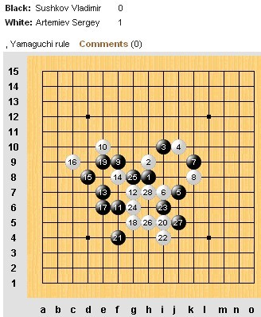
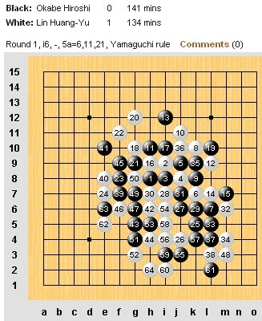
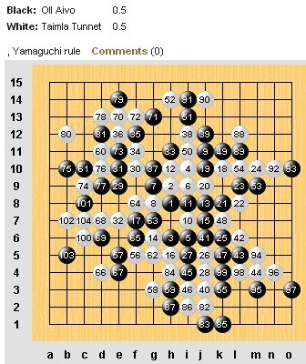

世锦赛AT第一轮卫冕冠军折戟
作者：通讯员
原文网址链接：http://www.rifchina.com/Article/ShowArticle.asp?ArticleID=6457
第十二届五子棋世界锦标赛A组第一轮卫冕冠军俄罗斯弗・苏切科夫（Vladimir Sushkov ）意外负于靠东道主名额进级的瑞典托・安德森 (Tord Andersson)，让人大跌眼镜。日本两名选手皆负，爱沙尼亚内战成和，中华台北两名选手一胜一负。



［ 微微一笑 于 2011-8-4 21:49:42 时花20金币送鲜花一朵］